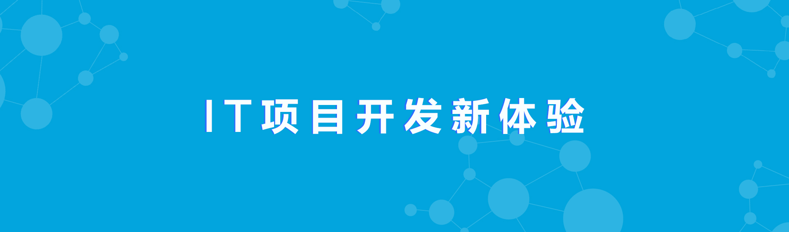

<?php

//微信分享的PHP代码--拷贝到HTML页面头部，将html页面后缀名改为.php
require_once "weixin-jssdk.php";

$jssdk = new JSSDK("wxf1981007732f2344", "8b050be0e3aae43cc4659ed7bbe9ffef");
$signPackage = $jssdk->GetSignPackage();

//定义微信分享用到的变量
$wxShareTitle  = '微信分享网页标题';
$wxShareDesc   = '分享内容描述';
$wxShareLink   = 'http://mba.rmbs.ruc.edu.cn/topic/americaweek/index.php';
$wxShareImgUrl = 'images/1.png';

?>


<!DOCTYPE html>
<html>
	<head>
		<meta charset="UTF-8">
		<title>微信分享网页</title>
		<script src="js/jweixin-1.0.0.js"></script>
		<script >
			//通过config接口注入权限验证配置
			wx.config({
			    debug: false,
			    appId: '<?php echo $signPackage["appId"];?>',
			    timestamp: <?php echo $signPackage["timestamp"];?>,
			    nonceStr: '<?php echo $signPackage["nonceStr"];?>',
			    signature: '<?php echo $signPackage["signature"];?>',
			    jsApiList: [
				'onMenuShareTimeline',
					'onMenuShareAppMessage',
					'onMenuShareQQ',
					'onMenuShareWeibo',
					'onMenuShareQZone'
			    ]
			});
		
			wx.ready(function(){
				//alert('Ready!');
				//分享到朋友圈
				wx.onMenuShareTimeline({
					title: '<?php echo $wxShareTitle;?>', // 分享标题
					link: '<?php echo $wxShareLink;?>', // 分享链接
					imgUrl: '<?php echo $wxShareImgUrl;?>', // 分享图标
					success: function () { 
						// 用户确认分享后执行的回调函数
					},
					cancel: function () { 
						// 用户取消分享后执行的回调函数
					}
				});
		
				//分享给朋友
				wx.onMenuShareAppMessage({
					title: '<?php echo $wxShareTitle;?>', // 分享标题
					desc: '<?php echo $wxShareDesc;?>', // 分享描述
					link: '<?php echo $wxShareLink;?>', // 分享链接
					imgUrl: '<?php echo $wxShareImgUrl;?>', // 分享图标
					type: '', // 分享类型,music、video或link，不填默认为link
					dataUrl: '', // 如果type是music或video，则要提供数据链接，默认为空
					success: function () { 
						// 用户确认分享后执行的回调函数
						alert('分享成功');
					},
					cancel: function () { 
						// 用户取消分享后执行的回调函数
					}
				});
				//分享到QQ
				wx.onMenuShareQQ({
					title: '<?php echo $wxShareTitle;?>', // 分享标题
					desc: '<?php echo $wxShareDesc;?>', // 分享描述
					link: '<?php echo $wxShareLink;?>', // 分享链接
					imgUrl: '<?php echo $wxShareImgUrl;?>', // 分享图标
					success: function () { 
					   // 用户确认分享后执行的回调函数
					},
					cancel: function () { 
					   // 用户取消分享后执行的回调函数
					}
				});
				//错误信息
				wx.error(function(res){
					alert("errorMSG:"+res);
				});
			});
		</script >
	</head>
	<body>
		<h1>微信分享网页</h1>
		
	</body>
</html>
